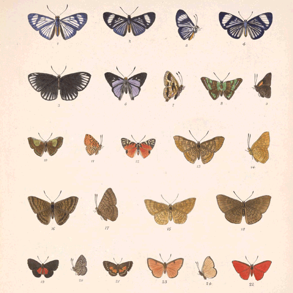
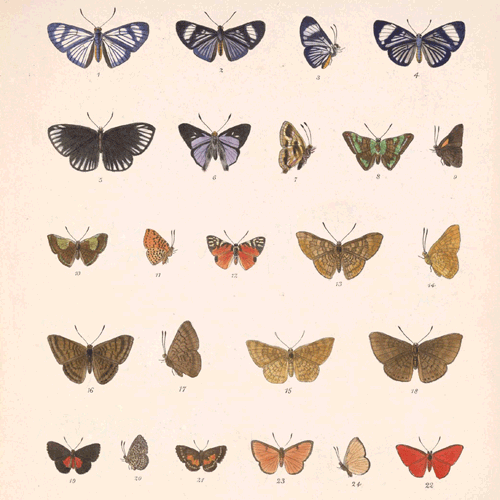
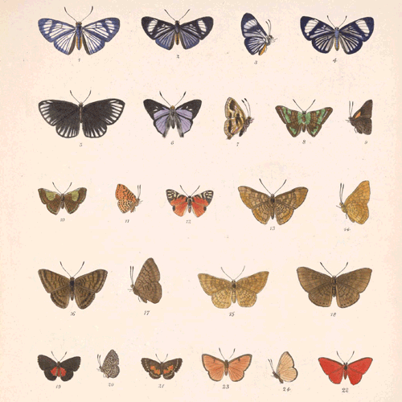

En las siguientes paginas hablaremos sobre los principales bloques de Temas Selectos de Biologia, los siguientes:
Animales en peligro de extincion
Plantas en peligro de extincion
Transporte y nutricion de las plantas
Hongos
Invertebrados
Vertebrados

 
